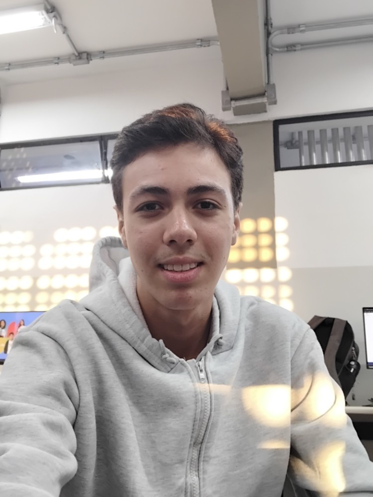

Desenvolvedor Web
Olá! Sou Rafael Mota Gonçalves, tenho 16 anos e sou um desenvolvedor apaixonado por tecnologia, ciência de dados e inovação. Sou estudante de Informática para Internet na Etec Professor Adolpho Arruda Mello (Centro Paula Souza) e futuro aluno da Fatec Presidente Prudente.
Atuo como Desenvolvedor Web, unindo lógica backend e design de interfaces para construir aplicações eficientes e acessíveis. Mantenho meu aprendizado contínuo através de cursos completos na plataforma Curso em video e desenvolvimento ativo no GitHub.
Ouro na Olimpíada Brasileira de Astronomia e Astronáutica (OBA). Ouro na Olimpíada Brasileira de Geografia (OBG)
Modelagem e desenvolvimento de um sistema de almoxarifado completo para gestão de bibliotecas (Setembro/2026).
Desenvolvimento focado em UI/UX e diretrizes de acessibilidade para garantir uma web inclusiva.
Projetos visuais concluídos com sucesso, incluindo catálogos em PDF e design para uma cooperativa de bibliotecas.